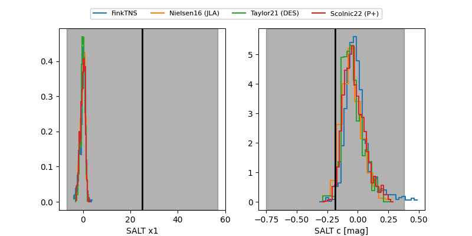

FINK: ZTF25abpjvdo
Lasair: ZTF25abpjvdo
ALeRCE: ZTF25abpjvdo
ZTF25abpjvdo (ztf,fink)
equatorial (ra, dec) = (283.7541,+66.72851)
galactic (l, b) = (97.2200,+24.41836)

last ztfg=20.21, ztfr=20.08
3 ztfg, 1 ztfr detections